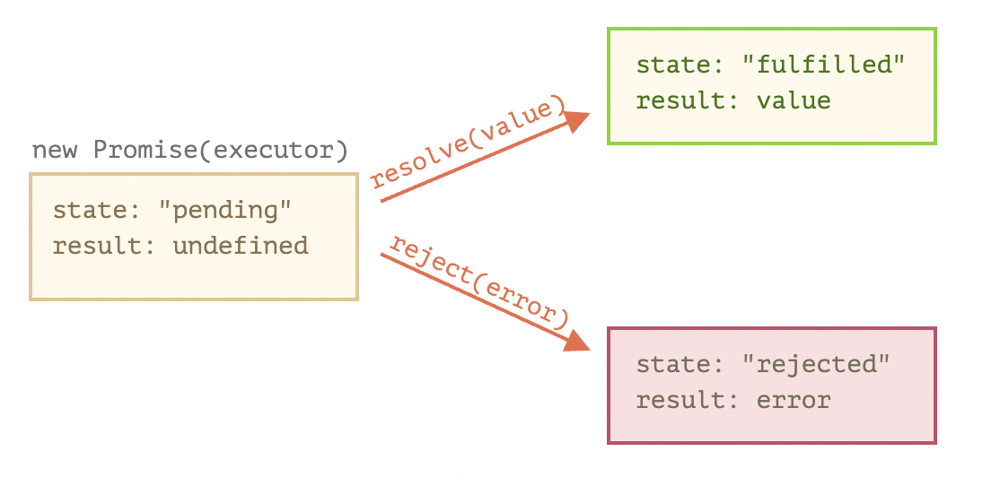
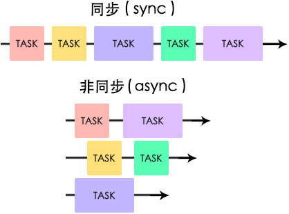

const num = 0;
const str = '0';
console.log(num == str)
//output: true
const num = 0;
const str = '0';
console.log(num === str)
//output: false
check type!
let s_prim = 'foo';
let s_obj = new String('foo');
console.log(typeof s_prim)
// "string"
console.log(typeof s_obj)
// "object"
The same in Boolean and Number
forEach(() => {...})
forEach((value) => {...})
forEach((value,key) => {...})
forEach((value,key,array) => {...})
const arrayExample = ['a','b','c','d']
//forEach((value) => {...})
arrayExample.forEach((e)=>{
console.log(e);
})
//output: 'a'
//output: 'b'
//output: 'c'
//output: 'd'
map(() => {...})
map((element) => {...})
map((element,key) => {...})
map((element,key,array) => {...})
const arrayExample = ['a','b','c','d']
//map((value) => {...})
const arrayMap = arrayExample.map((x)=>(`Get: ${x}`));
console.log(arrayMap)
//output: [ 'Get: a', 'Get: b', 'Get: c', 'Get: d' ]
function(arg1,arg2,...,argN)
{
return expression;
}
const testArrow = () => {
return expression;
};
const testArrow2 = () => (expression);

promiseExampleFunction
.then(resolveExpression)
.catch(rejectExpression)

interface Animal {
name: string
}
interface Bear extends Animal {
honey: boolean
}
const bear = getBear();
bear.name;
bear.honey;
interface Window {
title: string
}
interface Window {
status: string
}
type Animal = {
name: string
}
type Bear = Animal & {
honey: boolean
}
const bear = getBear();
bear.name;
bear.honey;
type Window = {
title: string
}
type Window = {
status: string
}
//Error: Duplicate identifier 'Window'